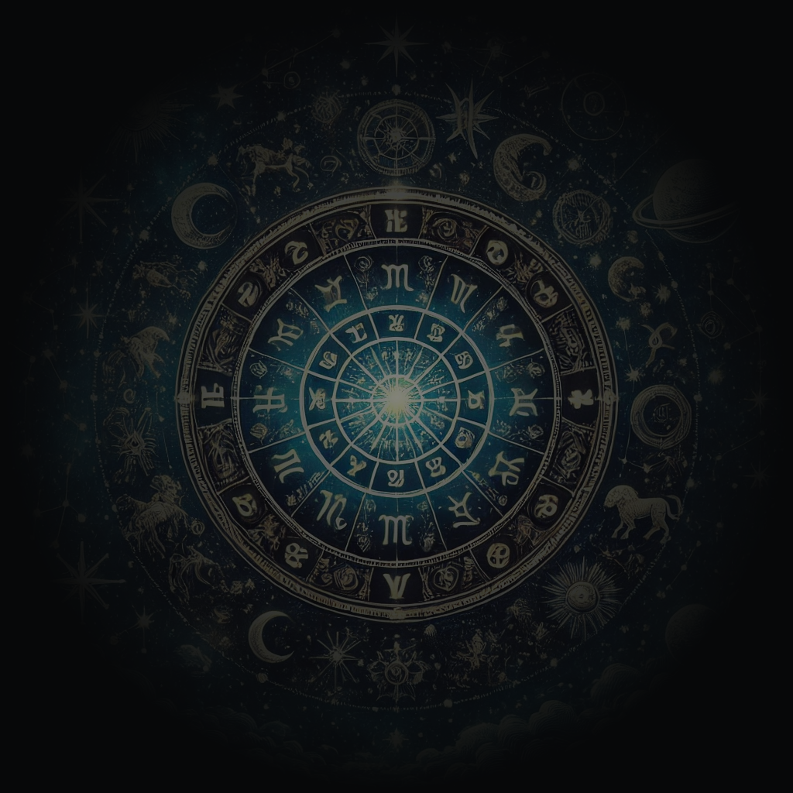
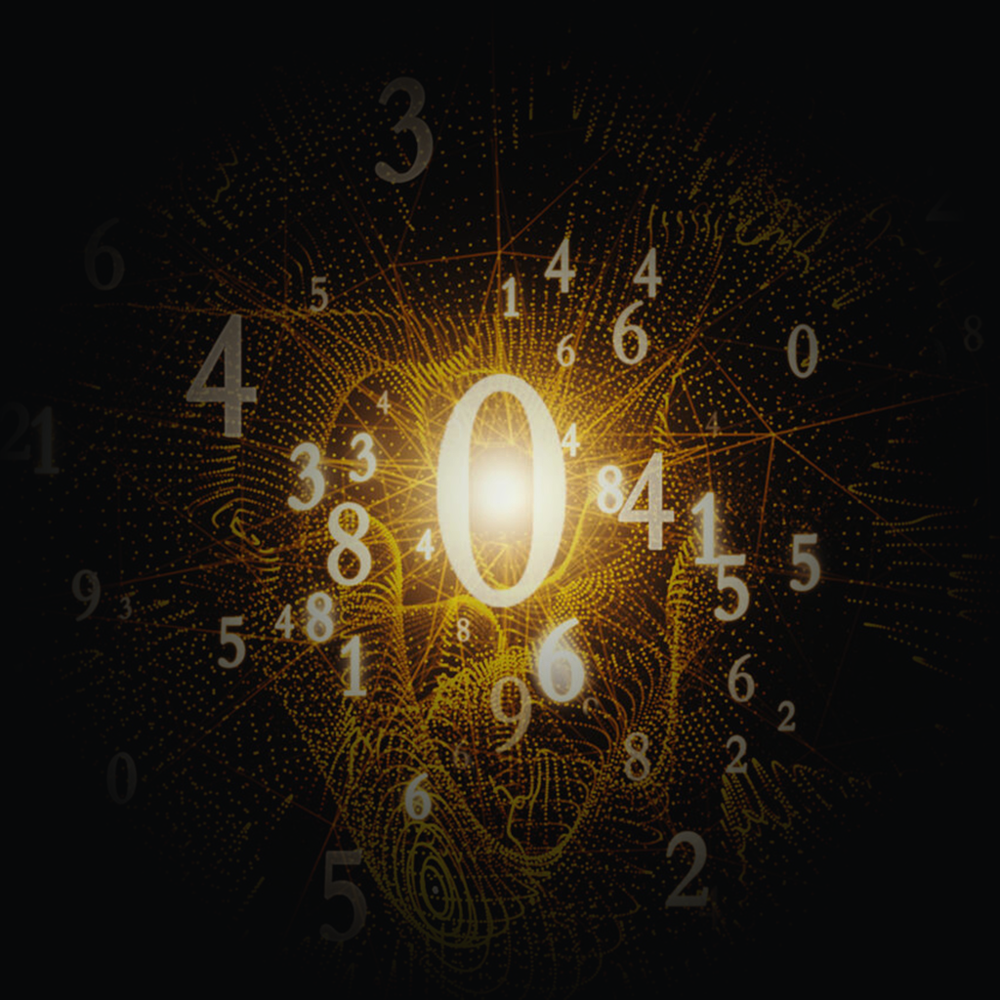
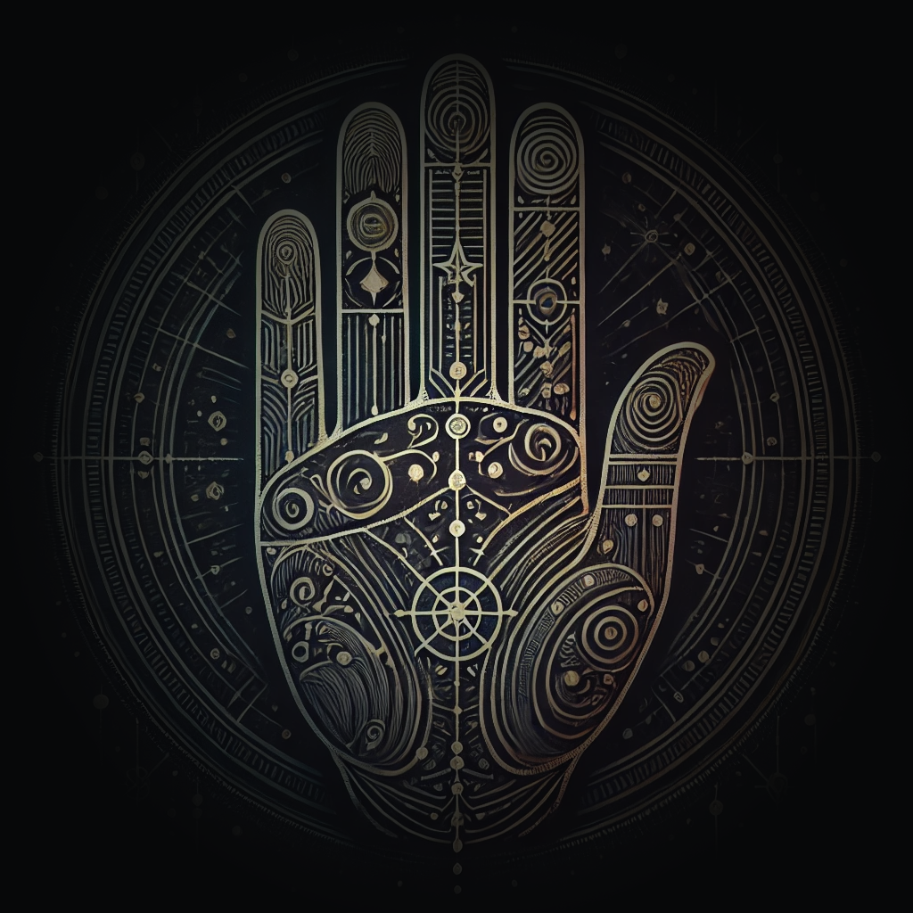
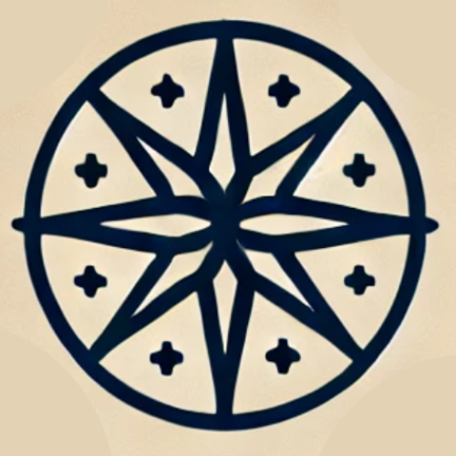
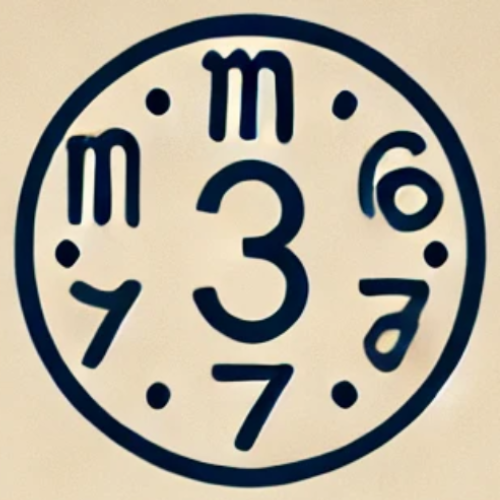
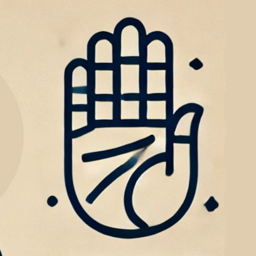
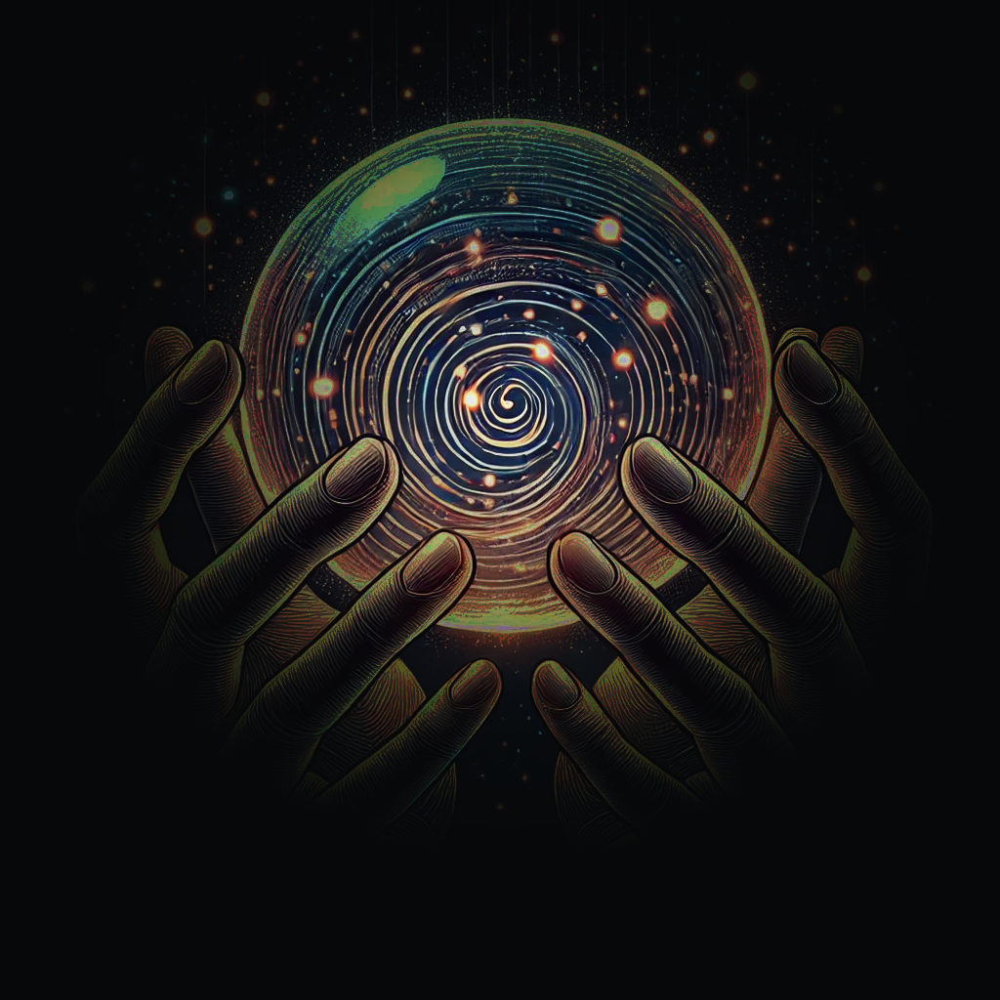

✨ Узнай свою судьбу
Добро пожаловать в мир, где наука о звёздах, магия чисел и интуитивные знания соединяются, чтобы раскрыть ваше истинное предназначение. Получите персональный прогноз и рекомендации от наших ботов — прямо сейчас.
“Астрология”
Что такое астрология?
Астрология – это древняя система, изучающая влияние небесных тел (планет, звезд и их расположения) на судьбу и характер человека. Она утверждает, что положение небесных тел в момент рождения человека может влиять на его личные качества и жизненные события.

“Нумерология”
Что такое нумерология?
Нумерология — это мистическое учение, изучающее влияние чисел на жизнь и судьбу человека. Считается, что числа, связанные с датой рождения и именем, имеют глубокое значение и могут раскрыть важные аспекты личности и жизненного пути.

“Хирология”
Что такое хирология?
Хирология, или хиромантия, — это искусство гадания по ладони, которое предполагает, что линии и формы на руках могут рассказать о характере, судьбе и будущем человека. Хирология рассматривает не только линии на ладони, но и форму пальцев, холмы и другие признаки.

Ваши персональные проводники в мир эзотерики
Получайте персональные предсказания, анализы и советы прямо в вашем Телеграм и WhatsApp.

Астрологические консультации
Получайте индивидуальные астрологические прогнозы и советы, основанные на вашем знаке зодиака и натальной карте. Узнайте, как планеты влияют на вашу судьбу, и сделайте осознанный выбор.

Нумерологический портрет
Узнайте, какие тайны скрывают ваши числа. Наш бот предоставит точные нумерологические анализы и рекомендации, основанные на вашей дате рождения и полном имени.

Хирологическое исследование
Проанализируйте линии своей ладони с помощью бота. Получите персональный отчёт о чертах характера, судьбе и потенциальных событиях вашей жизни.

Загляните в своё Будущее
Представьте, что в ваших руках — хрустальный шар, отражающий не только прошлое, но и возможные пути будущего. Астрология, нумерология и хирология — это ваши ключи к самопознанию, ясности и внутренней силе.